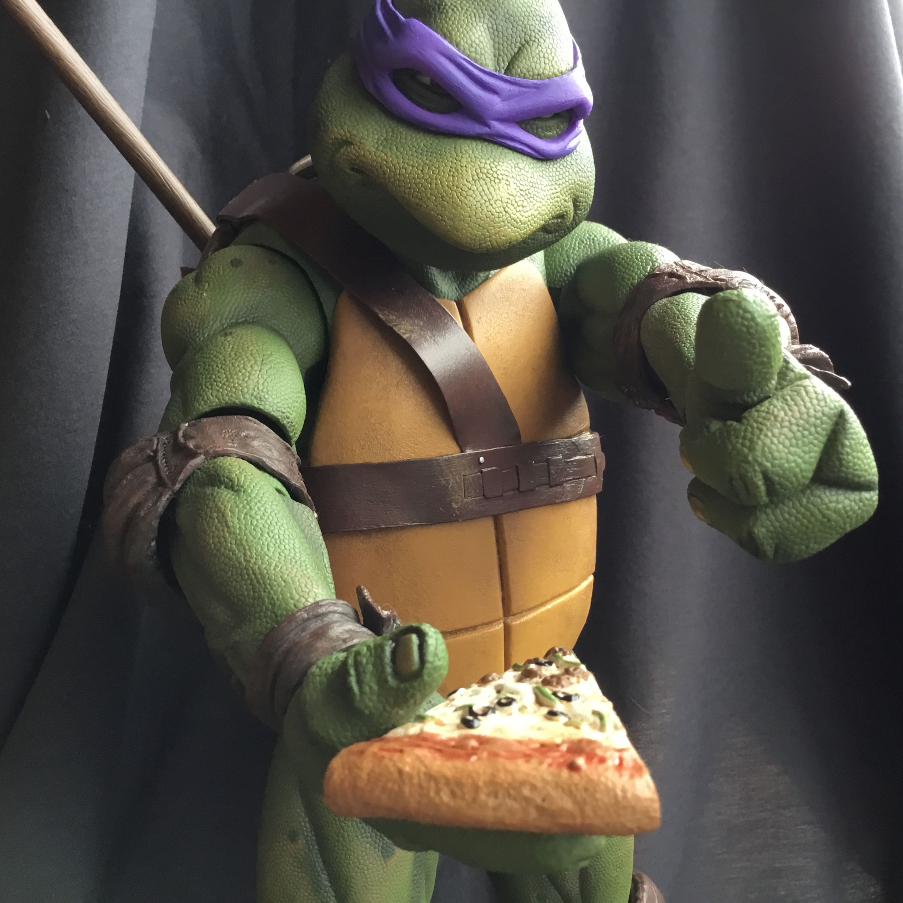

Донателло
Донателло (Донни или Дон) (Дата рождения: 1 Мая, 1984) — выдуманный персонаж,
один из Черепашек - ниндзя. Мозг и разум команды. В Mirage / Image у всех
черепашек красные банданы, но в остальных версиях его бандана фиолетового цвета.
Его фирменное оружие шест Бо. Донателло изображен как самый умный из Черепашек
- ниндзя, часто говорит на научном жаргоне и имеет страсть к науке и механике.
